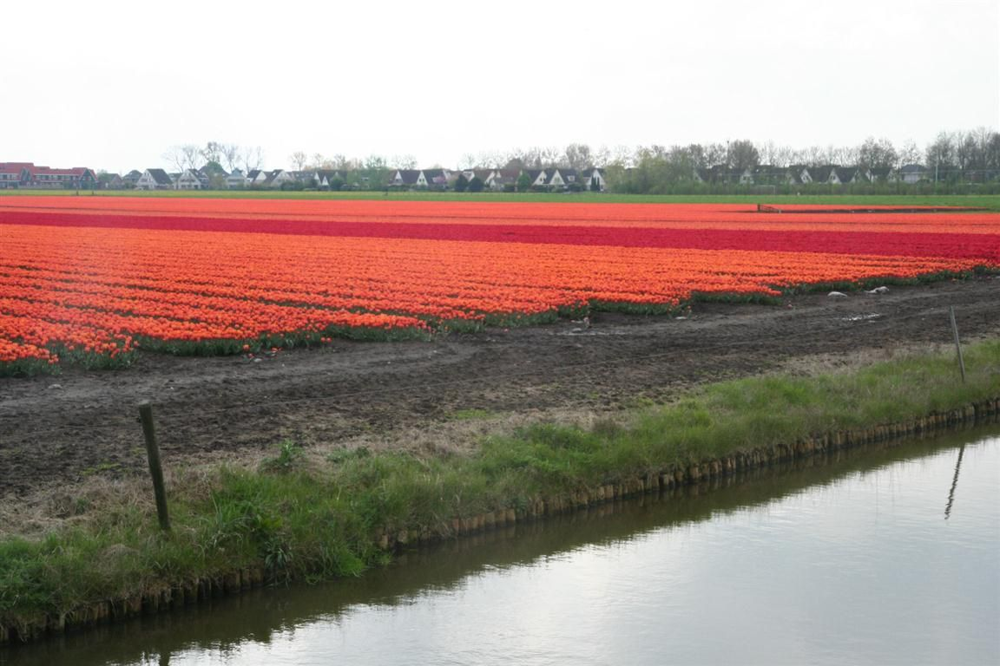
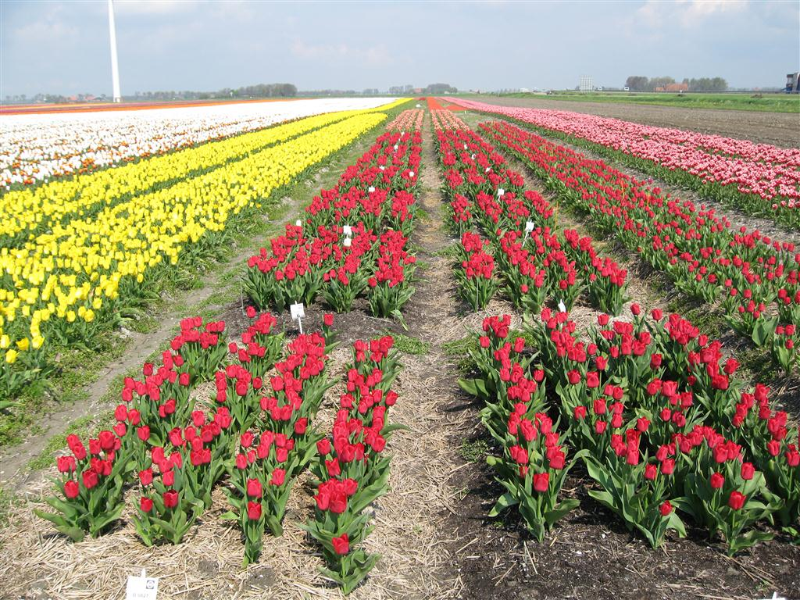
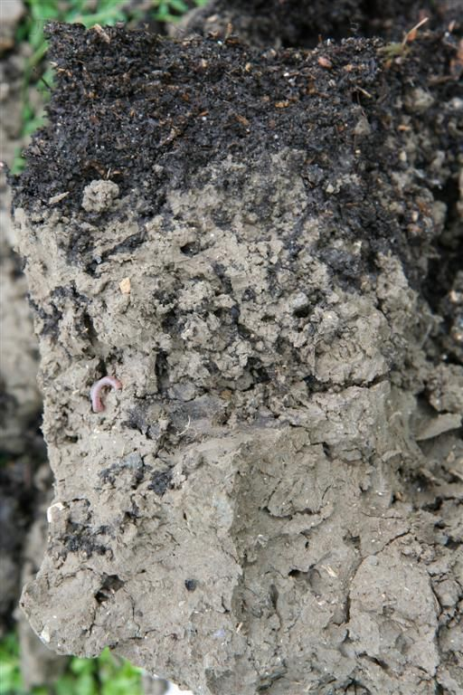
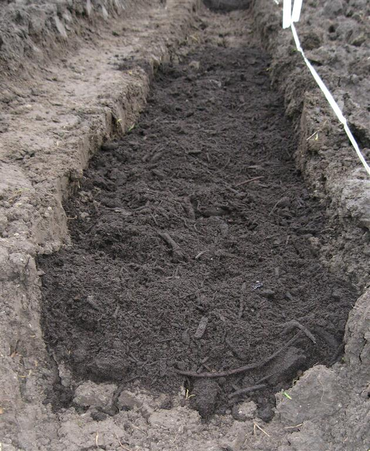
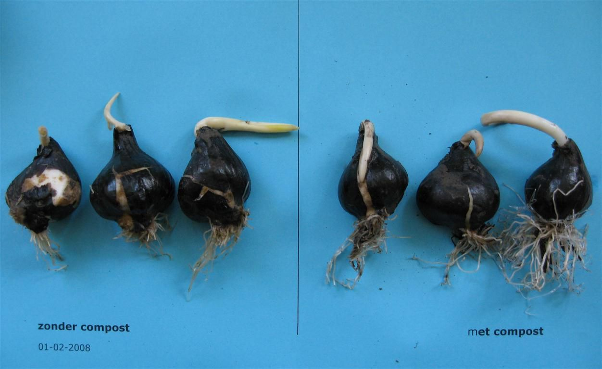
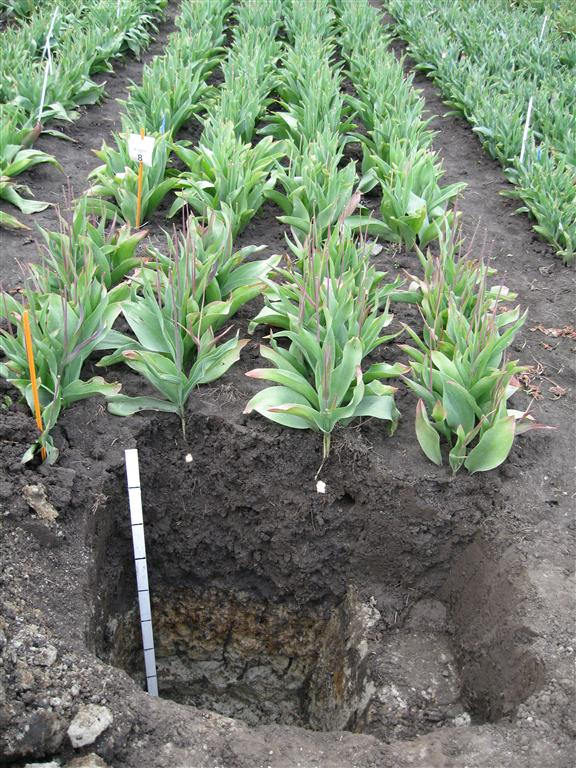
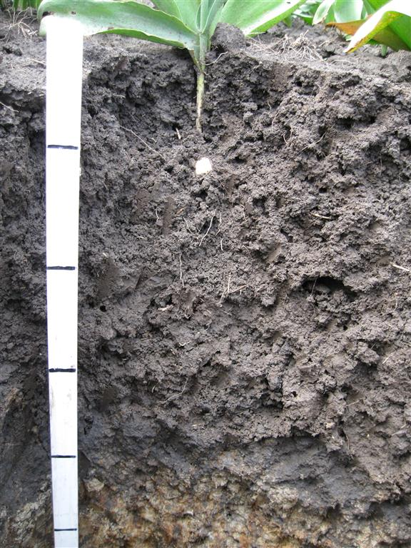
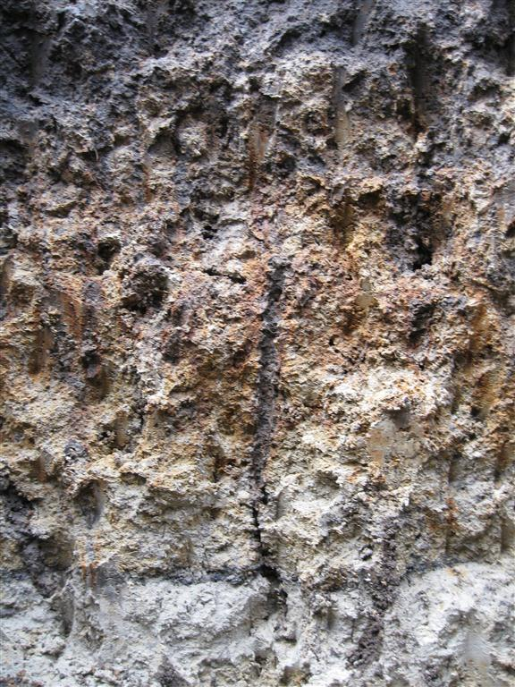
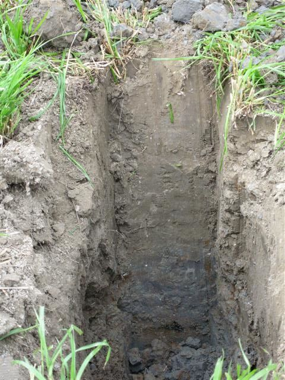
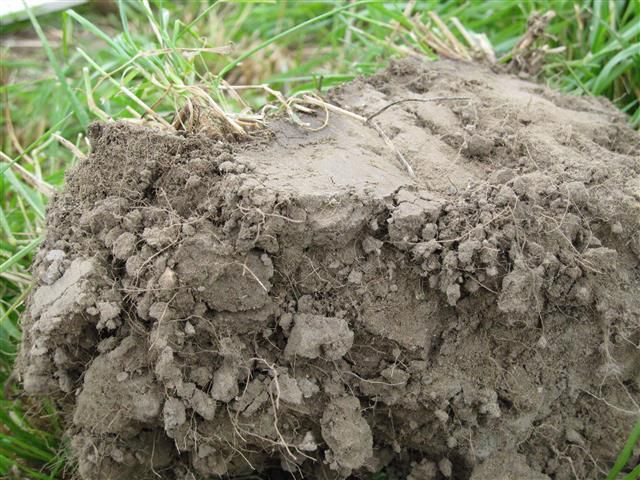

Zavel en klei
Zavel en klei
### BOLLENTEELT OP ZAVEL- EN KLEIGROND
Een diep wortelende tulp op een humusrijke zavelgrond bij de proeftuin Zwaagdijk. Niet altijd is er zo’n mooie grond beschikbaar voor bollenteelt op zavel en klei.
Inhoud
InleidingEisen aan de bodemMaatregelenWaar op letten bij de keuze van huurland?Literatuur
Inleiding
Bollenteelt op zavel- en kleigronden vindt hoofdzakelijk plaats op huurland.Bij teelt op huurland na gescheurd gras heeft de bollenteelt te maken met structuurbederf. Tijdens de graslandperiode worden namelijk steeds zwaardere machines gebruikt bij bemesting en oogst van het gras. In de akkerbouw staat de bodemstructuur onder druk onder meer door intensieve bouwplannen en ook gebruik van zwaardere machines onder ongunstige omstandigheden en minder aanvoer van organische stof.
Eisen aan de bodemDe bodem vergt bij de bollenteelt extra aandacht. Hier zijn meerdere redenen voor:-De meeste bolgewassen hebben geen wortelharen. De wortelharen maken een intensief contact met de bodem mogelijk en deze mogelijkheid ontbreekt dus bij bollen.-Bij veel planten kiemen de zaden in het voorjaar. De jonge planten hebben in het begin nog niet veel voedingsstoffen nodig. Pas als de grond warmer wordt en meer voedingsstoffen gaat leveren neemt de behoefte toe. Bolgewassen hebben al voedingsstoffen nodig voordat de mineralisatie van organische stof goed op gang is gekomen.-In de natuur groeien bollen ondiep in een enigszins humushoudende grond. Vanwege de kans op vorstschade en ziekten worden bollen vrij diep geplant en ook vaak in zand- en zavel- of kleigronden met lage organischestofgehalten.-Wortelvorming in de herfst is belangrijk. Er wordt evenwel vaak laat geplant waardoor er minder tijd is voor wortelvorming. Een humushoudende grond met een goede structuur die de beworteling stimuleert is dan extra belangrijk. De reden van het late planten is dat er pas geplant wordt als de bodemtemperatuur onder de 12 graden C ligt, dit in verband met de kans op fusarium en Augustaziekte. Dit is rond 1 oktober op zavel en klei. Om een goede bodemkwaliteit voor een teelt te krijgen zijn bodemwerking, bemesting en teelt in een vruchtopvolging met bodemverzorgende gewassen en groenbemesters van belang.

Bollenteelt op huurland in Noord-Holland
Op zavel- en kleigronden kan niet met hoge grondwaterstanden worden gewerkt. Er treedt dan luchtgebrek op en ook berijden geeft problemen. De grondwaterstand moet tenminste ca. 70 cm onder maaiveld liggen en op gevoelige gronden met hogere lutum- en organische stofgehalten tenminste 90 cm onder maaiveld. Ook wanneer er fijn zand aanwezig is die interne slemp kan veroorzaken is een goede ontwatering tot 90 cm onder maaiveld belangrijk. Verder moet de waterafvoer tenminste 10 mm per dag bedragen. De capillaire opstijging zou 6 mm per dag moeten bedragen, maar dat is op zavel- en kleigronden vaak niet meer dan 2 mm en beregenen wordt in het groeiseizoen belangrijk. De ondiepe beworteling van bolgewassen speelt een rol bij de grote vochtbehoefte. Er zijn geen wortels die diep gaan en veel vocht uit de ondergrond kunnen halen. Een goede verkruimelbaarheid van de grond was vroeger belangrijk. Grove kluiten tussen de bollen bij de oogst betekent veel handwerk. Door de nettenteelt is dit minder een probleem en kan er ook op zwaardere grond geteeld worden. Lichte gronden met weinig kalk en een laag organische stofgehalte zijn slempgevoelig en een bedekking met stro is hier belangrijk.Omdat bollen een goed doorwortelbare laag onder de boldiepte moeten hebben wordt er vaak vrij diep geploegd. De kans bestaat dat de poriënstructuur naar de ondergrond verbroken wordt en er waterstagnatie optreedt. Tevens wordt het organische stofgehalte lager. Een goede bodemstructuur in de laag onder boldiepte is belangrijk. Vooral op humusarme zwaardere gronden kan bij laat ploegen onder natte omstandigheden schade aan de bodemstructuur aangericht worden.Bodemvruchtbaarheid op zavel- en kleigrondenDe bollenteelt op zavel- en kleigronden betreft dus vooral teelt op huurland. De verzorging van de bodemvruchtbaarheid is daarom vooral een zaak van de verhuurder. Huurder en verhuurder hebben beide belang bij een goede bodem. Vaak wordt er gedurende langere tijd bij eenzelfde verhuurder land gehuurd. Samen naar de juiste bemesting, grondbewerking en gewaskeuze van de hele vruchtwisseling kijken is altijd wenselijk. Van groot belang is de keuze van het juiste perceel. De huurder heeft hierin veel vrijheid wanneer er geen vaste relatie is, maar ook wanneer er wel een gedurende meerdere jaren contact is, is bodemkwaliteit belangrijk. Een oogst van een hakvrucht in een natte herfst kan voor meerdere jaren een perceel minder geschikt maken voor bollenteelt.De belangrijkste principes rond onderhoud en verbetering van de bodemkwaliteit verschillen voor weidebouw en akkerbouw:
Weidebouw1. Ontwatering. Zorg voor een goede ontwatering. In winter en voorjaar moet het grondwater niet binnen 60 cm staan. Betaal als huurder eventueel mee aan drainagekosten.2. Bekalken. Zorg ervoor dat de zuurgraad bij de start goed is en bespreek een lange termijnplan.3. Berijden met steeds zwaardere machines onder natte omstandigheden is vooral op zavel- en kleigrond funest voor de bodemstructuur. Van belang is het niet rijden onder te natte omstandigheden, voor een lage bandenspanning zorgen (0,8 bar in het voorjaar en 1,0 bar in de zomer), onder natte omstandigheden met sleepslangen bemesten; geen koeien op te nat land.
AkkerbouwIn de akkerbouw liggen de mogelijkheden om een goede bodemkwaliteit te krijgen op het gebied van bodembewerking, bemesting en vruchtopvolging.1. Bodembewerking. Hoewel er steeds meer met lage drukbanden gewerkt wordt lost dit het probleem van te sterke belasting van de bodem niet op. De apparatuur wordt ook steeds zwaarder en er wordt ook meer gereden onder omstandigheden waaronder het vroeger niet mogelijk was om te rijden. Bij iedere keer dat er het land opgegaan wordt moet de vraag gesteld worden wat de gevolgen van de bodemstructuur zijn. Soms is het beter iets niet te doen.2. Bemesting. Vaste mest en compost dragen bij aan bodemlevenactiviteit en organische stofgehalte. Drijfmest draagt niet of nauwelijks bij en bij uitrijden in het voorjaar kan de structuur te lijden hebben.3. Vruchtopvolging. Teel de bollen zo lang mogelijk na een jaar waarin hakvruchten onder natte omstandigheden zijn geoogst. Wordt er wel optimaal gebruik gemaakt van groenbemesters? Besef dat de oogst van lelies onder natte omstandigheden aanzienlijke schade aan de bodemstructuur kan geven waar de verhuurder later mee te maken krijgt.
MaatregelenInhoud:-De voorbereiding van het bollenperceel na grasland-De voorbereiding van het bollenperceel na akkerbouw-Drainage-Compost-Voorbeelden op bedrijven-Groenbemesters-Grondbewerking zavel- en kleigronden
De voorbereiding van het bollenperceel na graslandBij grasland is laat bewerken ongunstig. Te overwegen valt om de laatste snede gras niet te oogsten en de verhuurder hier een vergoeding voor te geven. Grasland wordt meestal eind augustus/begin september doodgespoten. Tijdens het planten is de graszode goed afgestorven en de bodemstructuur blijft behouden. Hierdoor is het mogelijk na regen toch weer snel te kunnen planten. Ook zonder doodspuiten lukt het vaak het gras goed onder te werken. Extra aandacht voor onkruidbestrijding is dan wel nodig.Er zijn twee manieren om de grond geschikt te maken voor het planten:1. Vlak voor het planten wordt geploegd en vervolgens wordt gerotoregd en direct aansluitend geplant.2. Vlak voor het planten wordt de zode op 3-5 cm gefreesd om de zode goed stuk te krijgen. Daarna wordt gespit. Meestal met een krukasspitmachine. Achter de spitmachine is er, wanneer de grond dat nodig heeft, een rol met pennen die de grond nog wat fijner maakt.De tweede methode met de spitmachine wordt het meest uitgevoerd.Het diep onderwerken van de bovengrondse groene massa is niet wenselijk. Een goede verdeling van de groene massa door de bouwvoor kan verkregen worden door bij het ploegen niet met de voorschaar maar met een stro-inlegger te werken.
De voorbereiding van het bollenperceel na akkerbouwIn het algemeen geldt dat voorkomen moet worden dat te laat en onder te natte omstandigheden de bodembewerking plaats moet vinden. Ploegen is de meest gebruikte methode. Op lichte grond is het ook de enige methode. Wordt bij een lichte grond gespit dan komt de grond te los te liggen en is de kans op verslemping groter. Bij ploegen zijn de kluiten steviger.Op zwaardere en vooral organischestofrijke gronden is spitten wel te overwegen. Roterend is dan beter dan met een krukas. Soms is het na spitten nodig om een keer te frezen. Dit wordt dan in dezelfde werkgang uitgevoerd.Bij nettenteelt heeft ploegen het nadeel dat het land ongelijk komt te liggen. Soms zitten er zelfs gaten in de grond. Toepassing van een vorenpakker en wat aandrukken kan soulaas bieden. Gebruik van een rotorkopeg na het ploegen onder natte omstandigheden kan de bodemstructuur vernielen. Wordt er stro ondergeploegd, een combinatie van stro met dierlijke mest, groenbemesters of gras, dan kan het zijn dat dit organische materiaal onderin de bouwvoor komt te liggen, slecht verteert en tot luchtgebrek leidt. Bij gebruik van een stro-inlegger wordt het stro veel beter door de bouwvoor verdeeld.Bij een slechte bodemstructuur bestaat snel de neiging om dieper te ploegen. Dit is eventueel een tijdelijke oplossing maar brengt op langere termijn vrijwel altijd schade aan de bodemvruchtbaarheid toe doordat het organischestofgehalte lager wordt. Op lichte grond kan dichtslempen van de grond makkelijk optreden bij dieper ploegen.
DrainageEen goede ontwatering van het perceel is van groot belang. In een natte periode de grondwaterstand meten en het lopen van de drains beoordelen is van belang. Op lichte grond kan doorspuiten van de drains helpen. Bij twijfel is het te overwegen een perceel opnieuw of intensiever te draineren. Bij huurland is het een mogelijkheid om de kosten voor deel door de verhuurder te laten betalen. Een goedkope wijze van draineren is de toepassing van moldrainage. Met behulp van een woelpoot, met aan de onderkant een kegel wordt een soort mollengang door de grond getrokken. Aan de kegel is een ‘opruimer’ bevestigd die de wand van de molgang verstevigd. Niet altijd werkt dit systeem goed. Vooral op lichtere grond zakken de gangen weer in. In de Beemster zijn er goede ervaringen mee. Bij droge grond in september en een zware trekker kan er met 10 km per uur om de twee meter worden gedraineerd.De laatste jaren blijkt dat ook in de zomerperiode bij de oogst een goede waterafvoer belangrijk is door overvloedige regenval.
CompostVan nature groeien bollen in de humusrijke bovenlaag van de grond. Vanwege kans op vorstschade en ziekten worden bollen nu dieper geplant. Dat organische stof belangrijk is voor bollen mag uit onderstaande voorbeelden blijken. Het betreft hier de relatie compost en groei van bollen.
Onderzoek compost als mulchlaagIn de Wieringermeer is de invloed van een mulchlaag van groencompost op bodem en groei bollen onderzocht.

Rechts tulpen met compost als mulch, links met stro. De groei was sterker bij compost.

De compost, aangebracht in de herfst bleek in de zomer van het volgende jaar door regenwormen in vrij sterke mate de grond te zijn ingewerkt. Dit betekende een aanzienlijke verbetering van de structuur en de beworteling.
Onderzoek compost onder in de bouwvoor

Om de bollen dichter bij de natuurlijke groei te krijgen is onder in de bouwvoor een laagje groencompost aangebracht.

Bij gebruik van compost bleek de groei van de wortels direct na uitlopen beter bij gebruik van compost.
De verdere groei van de bollen kon niet onderzocht worden. Nader onder onderzoek moet dit uitwijzen.
Voorbeelden op bedrijven1 Een zavelgrond in West-FrieslandDeze grond die bij Proeftuin Zwaagdijk ligt is van een type dat zeer gewild is als huurland voor bollen. De bovenlaag van zo’n 40 cm dik is humeus en heeft een goede bodemstructuur. Onder de donkere bovengrond is een humusarme laag met veel verticale wormgangen, waardoor overtollig water snel weg kan. De grondwaterstand ligt rond de 80 cm diepte wat betekent dat er een constante aanvoer van water uit de ondergrond mogelijk is. De wortels van de tulp komen hier tot ruim 40 cm diepte de grond in, wat voor tulp vrij diep is. De bodemstructuur is mooi, omdat er in het voorgaande jaar gras stond dat onder droge omstandigheden ondergewerkt is. Een nadeel van de grond is wel, dat door de zwaarte en het hoge organische stofgehalte de grond veel vocht vast kan houden; wanneer er in een natte periode bewerkt moet worden kan de bodemstructuur sterk versmeren. Enkele kilometers verder ligt een grasperceel dat een minder goede verzorging had en een dichte bodemstructuur heeft. Hier moet ook tulp komen, maar de uitgangssituatie is niet optimaal.

Zwaagdijk. Een woudeerdgrond met een dikke donkere bovenlaag

De humusrijke bovenlaag van 35 cm dik is geheel doorworteld

Door verticale wormgangen is ook de ondergrond doorworteld
2 Grasland aan de Zeugweg in de Wieringermeer

Het plan is deze grond voor bollenteelt te gebruiken. In het verleden hebben er aardappelen, tarwe en suikerbieten op gestaan. 20% slib en 1,5% organische stof. Het is een organischestofarme grond dus, maar de bodemstructur is goed door een zorgvuldig beheer. Onderin zijn wel blauwe, anaerobe plekken zichtbaar.

De bovenlaag is humusarm, maar goed doorwortelbaar.
Deze grond is zeer gevoelig voor een verkeerd beheer. Hoewel nu in de nazomer mooi van structuur, is de teelt in het volgende jaar niet goed verlopen. Een natte periode bij de bodembewerking voor de bollenteelt kon deze grond toch niet aan.
GroenbemestersGroenbemesters worden onder meer geteeld om uitspoeling van voedingsstoffen tegen te gaan, om organische stof te leveren en om verstuiving tegen te gaan. De belangrijkste eigenschap is evenwel verbetering van de bodemstructuur. De vers ondergeploegde groene massa verbetert de bodemstructuur maar beperkt en kan onder natte omstandigheden ook een negatief effect op de bodemstructuur hebben doordat er luchtgebrek ontstaat. Het zijn vooral de wortels die de bodemdeeltjes bijeen houden en de structuur verbeteren.Verder is bij de teelt van groenbemesters van belang dat de gebruiksruimte van stikstof groter wordt, dat het inzaaien en onderwerken kosten met zich meebrengt en dat aaltjes zich kunnen vermeerderen tijdens de teelt.
Grondbewerking zavel- en kleigrondenDe teelt van bollen op zavel- en kleigronden vindt voornamelijk op huurland plaats. Het is vooral een zaak van de verhuurder om een optimale inzet van groenbemesters te verwezenlijken. De negatieve of positieve rol die groenbemesters bij schade door aaltjes kunnen hebben speelt in de bollenteelt op zavel- en kleigronden aanzienlijk minder dan op zandgronden. Aaltjesonderzoek van de grond voorafgaand aan de teelt is alleen nodig wanneer aardappels in de rotatie zijn opgenomen in verband met een AM-vrij verklaring. Bij een langdurig contact met een verhuurder kan een gesprek rond optimaal bodembeheer zinvol zijn. Bij groenbemesters zijn dan aandachtspunten die de keuze kunnen beïnvloeden:- vriest de groenbemester dood in de winter;- past de groenbemester in de vruchtwisseling;- vermeerdert de groenbemester geen aaltjes;- wat zijn de bewortelingseigenschappen van de groenbemester;- kan stimulering van slakken een probleem zijn.Een nieuwe ontwikkeling rond de teelt van groenbemesters is het zaaien van een mengsel. Hierdoor kunnen de positieve eigenschappen van meerdere groenbemesters gecombineerd worden. Een mogelijkheid is om een structuurverbeterende en een stikstofbindende groenbemester te combineren. Ook is het mogelijk om een groenbemester die snel kiemt en onkruid onderdrukt te combineren met een groenbemesters die vooral de bodemstructuur verbetert. Een voorbeeld van de eerste combinatie is haver met wikke. Van de tweede bladrammenas met Engels raaigras.
Waar op letten bij de keuze van huurland?
Inhoud-De geschiedenis van een perceel-Ziekten en voorvrucht-Bodemanalyse-Aaltjes-Start al eerder-Het contact met de verhuurder
## Inleiding
De groei van bollen wordt sterk bepaald door de bodemkwaliteit. De meeste bollen hebben een zwak wortelstelsel en wanneer de structuur verdicht is, wordt de wortelgroei sterk belemmert. Hierdoor neemt de ziektegevoeligheid toe en wordt de opbrengst lager. Verder moet er vaker bemest en beregend worden. Ook een slechte ontwatering, een verkeerde zuurgraad of tekortkomingen bij de voedingsstoffenlevering kunnen redenen zijn om een perceel niet te kiezen. Om tot een goede keuze te komen en de juiste maatregelen te nemen zijn van belang:-de geschiedenis van een perceel-de bodemanalyse-de bodemconditieDeze worden achtereenvolgens behandeld.
De geschiedenis van een perceelBij de keuze van huurland moet gelet worden op het gewas in het voorgaande jaar in verband met de bodemstructuur en op voorvruchten langer geleden in verband met het optreden van ziekten en plagen. Een aantal veel voorkomende voorvruchten worden behandeld:GraslandGrasland is voor bollen het meest populair. De graswortels binden de bodemdeeltjes aan elkaar en geven een goede samenhangende bodemstructuur. De vertering van gras en wortels geven ook een nalevering van stikstof. De reden dat een perceel grasland is kan soms ook zijn dat de grond eigenlijk ongeschikt is voor andere teelten. De grond is te zuur, te zwaar of het organischestofgehalte is te hoog. Ook voor bollenteelt is een dergelijk perceel dan minder geschikt. Grasland wordt de laatste jaren steeds intensiever bereden en bij bemesting en grasoogst wordt steeds zwaardere apparatuur gebruikt. Ook wordt vaak onder te natte omstandigheden gewerkt. De bodemstructuur beoordelen alvorens aan de slag te gaan, is bij grasland steeds belangrijker. Informatie over de wijze waarop de bodem beoordeeld kan worden, staat onder ‘De bodem’, envervolgens onder ‘Bodembeoordeling’. Een grasland dat voor bollenteelt wordt gebruikt moet tenminste 5 jaar oud zijn. Gras van 8 tot 10 jaar is ideaal. Dergelijk land wordt dan vers land genoemd, hoewel de term eigenlijk bedoeld is voor land waar nog nooit bollen hebben gestaan.Grasland op kleigrond mag alleen tussen 1 februari en 15 september worden gescheurd. Er moet dan direct aansluitend een relatief stikstofbehoeftig gewas worden ingezaaid. Het kan ook van 16 september tot 30 november wanneer tulp, krokus, iris of muscari (blauwe druif) worden geplant. Plant het gewas direct na omwerken van de graszode.
TarweIn de akkerbouw is tarwe als voorvrucht aantrekkelijk. Tarwe wordt in het algemeen onder relatief droge omstandigheden geoogst en de kans op bodemverdichting bij de oogst is dan kleiner. Tevens levert tarwe via wortels en stro verse organische stof. Een nadeel van tarwe is wel dat de grond vaak vast en kluiterig is. De voorvrucht voor tarwe is vaak aardappel. Bij de ruggenopbouw voor aardappel wordt de grond fijngefreesd en verdwijnen de stabiele structuurelementen. Bij de oogst van de aardappel kan verdere structuurachteruitgang optreden. Vervolgens wordt tarwe gezaaid en ligt de grond nog lang open en kan bij regen verdere verdichting optreden. De bodemstructuur na tarwe valt om deze redenen soms tegen. Het ophalen van de strobalen na de oogst kan ook tot diepe sporen leiden.
Suikerbiet en andere rooivruchtenGewassen die laat onder natte omstandigheden geoogst worden kunnen meerdere jaren tot een slechte bodemstructuur leiden. Suikerbiet is berucht. Bij suikerbiet wordt vrijwel onafhankelijk van het weer gerooid. Bollen telen na suikerbieten is daarom riskant. Toch worden bollen wel na suikerbieten geteeld. De reden is dat de bodemstructuur van bietenland erg mooi kan zijn wanneer onder voldoende droge omstandigheden is geoogst. De bodemstructuur is dan beter dan na aardappels en tarwe.De bodemstructuur is na aardappels vaak niet mooi door structuurschade bij de ruggenbouw en natte omstandigheden bij de oogst.Groentegewassen zoals peen zijn vaak minder aantrekkelijk door het late oogsttijdstip en het verdichten van de bodem tijdens de oogst.
LuzerneLuzerne is aantrekkelijk als voorvrucht. De grond is vaak goed doorwortelbaar en er is een constante nalevering van stikstof. Een groot probleem kan zijn dat de luzerne weer opnieuw uitloopt. Een goede chemische bestrijding in combinatie met het goed stukfrezen van de ondergrondse delen.
GraszaadGraszaad is potentieel een goede voorvrucht. Eenjarig graszaad laat in de regel een betere structuur achter dan meerjarig graszaad. Het type gras is ook van belang. Engels raaigras, Italiaans raaigras en Rietzwenkgras zijn goede bodemverbeteraars. Soms levert graszaad als voorvrucht toch een sterk tegenvallende structuur op.
Ziekten en voorvruchtDiverse ziekten, waaronder zuur en Augustaziekte, kunnen jaren later nog voor besmetting zorgen. Zuur is sinds 2000 in toenemende mate een probleem en goed uitzoeken wat de geschiedenis van een perceel is, is belangrijk. Op een perceel waar nog nooit bollen hebben gestaan hebben is aantasting evenwel ook niet uitgesloten. Ziekten kunnen ook met het plantgoed meekomen. Het is wenselijk om een rotatie van 1:6 aan te houden. Bij grasland bijvoorbeeld 4 jaar gras, 1 jaar bollen en dan 1 jaar bloemkool of een ander gewas.
BodemanalysesBij huurland zijn er een aantal bodemanalyses die speciaal de aandacht vragen. Het organischestofgehalte zegt iets over de bodemkwaliteit. Bij kalkrijk zand is 1,1 % tenminste wenselijk. Bij zavel- en kleigronden en dekzandgronden is 3% organische stof een indicatie voor een potentieel redelijke bodemkwaliteit. Ook een lager gehalte dan 3% kan een goede beworteling mogelijk maken. De kluit- of kuilbeoordeling kan dit uitwijzen. Let er op dat zeer lage pH-waarden niet in 1 jaar hersteld kunnen worden. Hoge pH-waarden duidelijk boven de 7 kunnen wijzen op een geringe activiteit van het bodemleven. Wat betreft voedingsstoffen is het wenselijk dat de waarden niet extreem zijn. Wat betreft de stikstofvoorziening draagt de bodemanalyse niet zoveel bij. Een hoog organische stofgehalte, een voorvrucht die veel organische stof achterlaat (bijvoorbeeld meerjarig gras) en ruime bemestingen met vaste mest kunnen alle een hoog stikstofleverend vermogen van de grond met zich mee brengen. Lage fosfaatgehalten zijn zelden een probleem, vooral niet bij een goede bodemstructuur. Hetzelfde geldt voor magnesium. Gebrek aan sporenelementen is via de bodemanalyse niet goed te achterhalen. Bij zeer lage gehalten is extra opletten van belang en bij twijfel, omdat het gehalte laag is, maar de bodemkwaliteit ook slecht is, een bladbemesting toepassen.
AaltjesHet is op het moment niet gebruikelijk om bij huurland onderzoek naar aaltjes uit te voeren. Onderzoek moet uitwijzen of dit terecht is. Wanneer er in de vruchtwisseling aardappels voorkomen is het verplicht te monsteren voor een AM-vrij verklaring. Dit kan bij de PD, BKD en NAK.
De bodemconditieDe bodemanalyse geeft een belangrijk, maar beperkt deel van de bodemeigenschappen weer. Een kuil geeft inzicht in de bewortelingsmogelijkheden, de activiteit van het bodemleven, het waterafvoerend vermogen en het vochtleverend vermogen van de grond en mag bij een goede bodembeoordeling niet ontbreken.
Start al eerderIdeaal is om twee jaar van te voren een perceel te kiezen. Staan er dan in de winter plassen op het land dan kan dat al betekenen dat er verdichtingsproblemen zijn. Ook kan beoordeeld worden of het perceel voldoende vlak ligt. Er is bij ruim van te voren beginnen ook tijd om maatregelen te nemen. Woelen of greppels kunnen oplossingen zijn. Het toepassen van greppels heeft evenwel ook nadelen bij onderhoud en oogst van de bollen. Tevens heb je landverlies.Na de bollen:Aardappel en kool zijn goede navruchten van bollen. Gras was altijd een slechte, omdat opslag van kleine bollen zuuroverdracht kan veroorzaken. Dit probleem is door de nettenteelt kleiner geworden omdat er dan minder kleine bollen achterblijven.
Het contact met de verhuurderDe bollenteler gebruikt het land maar een jaar en fundamentele verbeteringen van de bodemkwaliteit liggen dan niet voor de hand of zijn niet mogelijk. De verhuurder heeft evenwel ook belang bij een goede bodemkwaliteit. Wanneer gedurende langere tijd grond gehuurd wordt is bodemkwaliteit een gemeenschappelijk belang. Ga in overleg met de verhuurder en bespreek de maatregelen rond bodemvruchtbaarheid.
Literatuur
Berge, H.F.M. ten, 2007. Mestbeleid en bodemvruchtbaarheid in de Duin- en Bollenstreek. Werkdocument 47 WONM WUR Wageningen.Bodemkaart van Nederland 1965, 1987, 1992, 1996: 9W, 14WO, 15W, 19WO, 20W, 24W, 25W, 25O. Stiboka, Wageningen.Dam, A. van e.a., 2001. Mangaan in tulp: soms een opbrengsteffect. Bloembollencultuur nr. 7.Dam, A. van e.a., 2003. Koubont de baas met ijzer: hoe doe je dat. Bloembollenvisie nr. 18.Dam, A. van e.a., 2004. Adviesbasis voor de bemesting van Bloembolgewassen. PPO sector bloembollen, Wageningen, rapport 708.Dam, A. van en G. Braam, 2005. Mest- en mineralenkennis voor de praktijk. Bemestingsstrategie voor de bloembollenteelt. WUR/DLV blad 6 DWK-398-I,II,II.Groenewoud C., 2007. Compensatie bollengrond. Aanvullend onderzoek. Arcadis Hoofddorp 2007.Kater, L.J.M. e.a., 2004. Kosteneffectieve maatregelen-pakketten bij mineralenbeleid verdergaand dan Minas. PPO Bloembollen rapport nr 714.Knaap, W.C.A. van der, 1984. Bodemgeschiktheid voor de bloembollenteelt. Bedrijfsontwikkeling 15, 12.Schreuder, R. e.a., 2000. Consequenties Minas en mestbeleid voor de bollenteelt op sectorniveau. Laboratorium voor Bloembollenonderzoek, Lisse, Rapport 123.Smeding, F. en N. Reijers, 2006. Bedrijfskaart biodiverse bloementeelt. PPO, LBI en CLM.